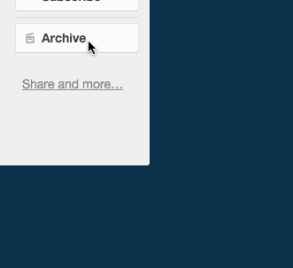

Deleting a Trello card involves a 3 click process, which can be quite annoying if you're deleting multiple cards.

The Trello delete card bookmarklet deletes a card with 1 click.
 Trello
Trello Deleting a Trello card involves a 3 click process, which can be quite annoying if you're deleting multiple cards.
The Trello delete card bookmarklet deletes a card with 1 click.